토목산업기사 (2005-09-04 기출문제)
1과목: 응용역학
1. 그림과 같은 등분포 하중에서 최대 휨 모멘트가 생기는 위치에서 휨응력이 1200kg/cm2 라고 하면 단면계수는?
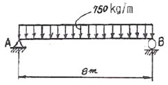
- 400cm3
- 450cm3
- 500cm3
- 550cm3
(정답률: 알수없음)

2. 그림과 같은 게르버보의 A점의 휨모멘트는?
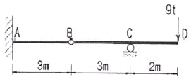
- 72 t∙m
- 36 t∙m
- 27 t∙m
- 18 t∙m
(정답률: 알수없음)
3. 그림과 같은 반원의 도심을 지나는 X축에 대한 단면 2차 모멘트의 값은?
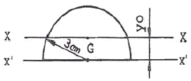
- 7.88cm4
- 8.89cm4
- 9.94cm4
- 10.87cm4
(정답률: 알수없음)
4. 양단이 고정된 기둥의 축방향력에 의한 좌굴하중 Pcr을 구하면? (E :탄성계수, I :단면 2차 모멘트, L :기둥의 길이)
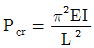
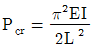
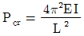
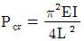
(정답률: 알수없음)
5. P1, P2가 0(Zero)으로부터 작용하였다. B점의 처짐이 P1으로 인하여 δ1, P2로 인하여 δ2가 생겼다면 P1이 하는일은?
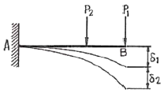
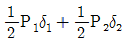
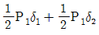
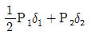
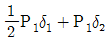
(정답률: 알수없음)
6. 내민보에 집중하중 2ton이 그림과 같이 작용할 때 직사각형 단면보에 발생하는 최대 전단응력은 얼마인가? (단, 보의 단면적 A = 20cm × 15cm)
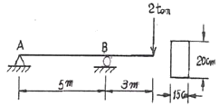
- 5 kg/cm2
- 7.5 kg/cm2
- 10 kg/cm2
- 15 kg/cm2
(정답률: 알수없음)
7. 지름이 5cm, 길이가 200cm인 탄성체 강봉을 15mm 만큼 늘어나게 하려면 얼마의 힘이 필요한가? (단, 탄성계수 E=2, 100,000kg/cm2)
- 약 2061 t
- 약 206 t
- 약 3091 t
- 약 309 t
(정답률: 알수없음)
8. 그림과 같이 ABC의 중앙점에 10t의 하중을 달았을 때 정지하였다면 장력 T의 값은 몇 t인가?
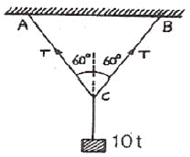
- 5
- 10
- 8.66
- 15
(정답률: 알수없음)
9. 그림과 같은 단순보에서 C점의 휨모멘트는?
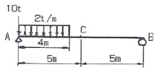
- 50 t∙m
- 24 t∙m
- 16 t∙m
- 8 t∙m
(정답률: 알수없음)
10. 다음 그림에 보이는 연속보의 중앙 지점에서의 휨모멘트를 구하면? (단, EI는 일정하다.)
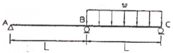
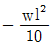
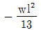
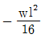
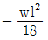
(정답률: 알수없음)
11. 다음 그림에서 최대 처짐각비(θB:θD)는?(오류 신고가 접수된 문제입니다. 반드시 정답과 해설을 확인하시기 바랍니다.)
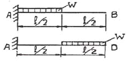
- 1 : 2
- 1 : 3
- 1 : 5
- 1 : 7
(정답률: 알수없음)
12. 그림과 같은 직사각형 도형의 도심을 지나는 X, Y 두 축에 대한 최소 회전 반지름의 크기는?
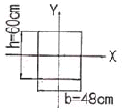
- 9.48cm
- 13.86cm
- 17.32cm
- 27.71cm
(정답률: 알수없음)
13. 그림과 같은 단순보에서 A점의 처짐각 θA는? (단, EI는 일정하다.)(오류 신고가 접수된 문제입니다. 반드시 정답과 해설을 확인하시기 바랍니다.)
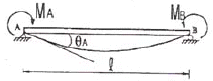
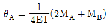
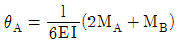
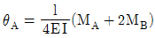
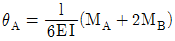
(정답률: 알수없음)
14. 그림과 같은 사각형 단면을 가지는 기둥의 핵 면적은?
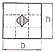
- bh/9
- bh/18
- bh/16
- bh/36
(정답률: 알수없음)
15. 직경 20mm, 길이 2m인 봉에 20t의 인장력을 작용시켰더니 길이가 2.08m, 직경이 19.8mm로 되었다면 포아송비는 얼마인가?
- 0.5
- 2
- 0.25
- 4
(정답률: 알수없음)
16. 다음 그림의 3활절 원형 아치에서 지점 A의 반력은 얼마인가?
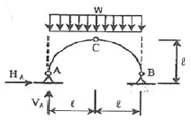
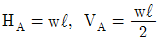
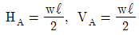
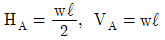
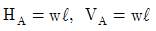
(정답률: 알수없음)
17. 그림과 같은 구조물의 C점에 300kg의 물체가 매달려있으면 T2부재가 받는 힘은 얼마가 되겠는가? (단,
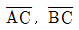
부재의 단면은 같고 재료도 같으며, A, B, C 점은 전부 힌지로 되어 있다.)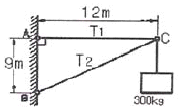
- 300kg
- 500kg
- 900kg
- 1500kg
(정답률: 알수없음)
18. 그림과 같은 내민보에 대하여 지점 B에서의 처짐각을 구하면? (단, EI=일정)
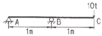
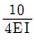
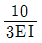
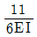
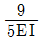
(정답률: 알수없음)
19. 그림과 같은 정정라멘에서 Mc구하면?
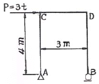
- 10 t∙m
- 12 t∙m
- 14 t∙m
- 16 t∙m
(정답률: 알수없음)
20. 3연 모멘트 방정식의 사용처로 가장 적당한 것은?
- 트러스 해석
- 연속보 해석
- 케이블 해석
- 아치 해석
(정답률: 알수없음)
2과목: 측량학
21. 단곡선 설치에서 기점부터 곡선시점까지의 거리가 173.48m일 때 기점부터 곡선종점 E.C.까지의 거리는? (단, 교각 I = 45°, 곡선 반지름 R = 100m임)
- 282.020m
- 272.020m
- 262.020m
- 252.020m
(정답률: 알수없음)
22. 등고선에 대한 설명 중 옳지 않은 것은?
- 등경사면에서는 등간격으로 표현 된다.
- 지성선과 등고선은 반드시 직교해야 한다.
- 등고선이 계곡을 지날 때에는 능선을 지날 때 보다 그 곡선의 반지름이 반드시 크다.
- 등고선은 절벽이나 동굴 등 특수한 지형외에는 합쳐지거나 또는 교차하지 않는다.
(정답률: 알수없음)
23. 삼각점 0에서 3점의 사이각을 관측하여 다음과 같은 오차 결과가 나왔다. 이 때 오차에 대한 보정값 배분으로 옳은 것은?
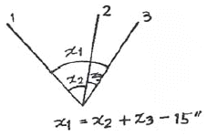
- x1=-5″, x2=-5″, x3=+5″
- x1=-5″, x2=+5″, x3=-5″
- x1=-5″, x2=+5″, x3=+5″
- x1=+5″, x2=+5″, x3=-5″
(정답률: 알수없음)
24. 차량의 앞뒤 바퀴의 고정차축 때문에 곡선부에서 발생하는 현상을 보완하기 위해 설치하는 것은?
- 캔트
- 확폭
- 편구배
- 차폭
(정답률: 알수없음)
25. GPS(Global Positioning System)에 관한 설명으로 틀린 것은?
- GPS에 의한 위치결정 시스템은 전파의 도달소요시간을 이용하여 위성으로부터의 거리를 관측한다.
- GPS에서 사용하고 있는 타원체는 WGS-72이다.
- 관측에 소요되는 시간과 정확도를 보완하기 위해 개발되었으며 NNSS의 개량형이다.
- GPS에서 직접 구한 높이는 우리가 일상 사용하는 표고와 다르다.
(정답률: 알수없음)
26. 30m의 테이프로 측정한 거리는 300m이었다. 이 때 테이프의 길이가 표준길이보다 2cm가 짧아 있었다면 이 거리의 정확한 값은?
- 299.80m
- 300.20m
- 330.20m
- 328.80m
(정답률: 알수없음)
27. 하천의 유속측정에 있어서 수면깊이가 수심에 대한 비가 0.2, 0.6, 0.8인 지점의 유속이 0.562m/sec, 0.497m/sec, 0.364m/sec일 때 평균유속을 구한 것이 0.463m/sec이었다면 이 평균유속을 구한 방법으로 옳은 것은?
- 2점법
- 3점법
- 4점법
- 평균유속법
(정답률: 알수없음)
28. 어떤 측선의 길이를 3군으로 나누어 측정하였다. 이 때 측선길이의 최확값은?
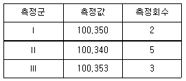
- 100.344m
- 100.346m
- 100.348m
- 100.350m
(정답률: 알수없음)
29.
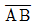
측선의 방위각이 50°30′이고 그림과 같이 편각 관측하였을 때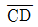
측선의 방위각은?(오류 신고가 접수된 문제입니다. 반드시 정답과 해설을 확인하시기 바랍니다.)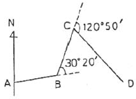
- 125°00′
- 131°00′
- 141°00′
- 150°00′
(정답률: 알수없음)
30. 수준측량에서 전후시의 거리를 같게 취하는 가장 중요한 이유는?
- 시준선과 수준기 축이 나란하지 않아 생기는 오차를 제거하기 위해
- 표척의 0 눈금의 오차를 제거하기 위해
- 시차에 대한 오차를 제거하기 위해
- 표척의 기울기에 의해 생기는 오차를 제거하기 위해
(정답률: 알수없음)
31. 삼각형 3변의 길이가 25.4m, 40.8m, 50.6m일 때 면적은?
- 489.27m2
- 514.36m2
- 531.87m2
- 551.27m2
(정답률: 알수없음)
32. 다음 간접거리 측정에서 수평거리 D를 구하는 식은? (단, A점에서의 기계고와 B점에서의 폴의 시준점까지의 높이는 같다.)
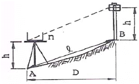
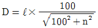
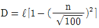
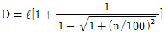
(정답률: 알수없음)
33. 접선과 현이 이루는 각을 이용하여 곡선을 설치하는 방법으로 정확도가 비교적 높아 단곡선 설치에 가장 널리 사용되고 있는 방법은?
- 지거설치법
- 중앙종거법
- 편각설치법
- 현편거법
(정답률: 알수없음)
34. 비행 고도 4,600m에서 초점거리 184mm 사진기로 촬영한 수직항공사진에서 길이 150m 교량은 얼마의 크기로 표현되는가?
- 8.5mm
- 8.0mm
- 7.5mm
- 6.0mm
(정답률: 알수없음)
35. 항공사진측량에서 사진지표는 무엇을 구할 때 사용하는가?
- 주점
- 표정점
- 연직점
- 부점
(정답률: 알수없음)
36. 클로소이드 매개변수(Parameter) A가 커질 경우에 대한 설명으로 옳은 것은?
- 곡선이 완만해진다.
- 자동차의 고속 주행이 어려워진다.
- 곡선이 급거브가 된다.
- 접선각도에 비례하여 커진다.
(정답률: 알수없음)
37. 다음의 오차 중 최소제곱법으로 처리할 수 있는 오차는?
- 물리적 오차
- 정오차
- 부정오차
- 잔차
(정답률: 알수없음)
38. 축척 1/50000 지형도에서 A점으로부터 B점까지의 도상 거리가 70mm이었다. A점의 표고가 200m, B점의 표고가 10m이라면 이 사면의 경사는?
- 1/18.4
- 1/20.5
- 1/22.3
- 1/25.1
(정답률: 알수없음)
39. 트래버스 측량에서 발생된 폐합오차를 조정하는 방법중의 하나인 콤파스 법칙(Compass Rule)의 오차 배분방법에 대한 설명으로 옳은 것은?
- 트래버스 내각의 크기에 비례하여 배분한다.
- 트래버스 외각의 크기에 비례하여 배분한다.
- 각 변의 위ㆍ경거에 비례하여 배분한다.
- 각 변의 측선 길이에 비례하여 배분한다.
(정답률: 알수없음)
40. 평판을 정치할 때 오차에 가장 큰 영향을 주는 것은 무엇인가?
- 수평맞추기(정준)
- 중심맞추기(구준)
- 방향맞추기(표정)
- 높이맞추기(표고)
(정답률: 알수없음)
3과목: 수리학
41. 콘크리트 직사각형 수로 폭이 8m, 수심이 6m일 때 Chezy의 공식에서 유속계수(C)의 값은? (단, 매닝의 조도계수 n = 0.014이다.)
- 79
- 83
- 87
- 92
(정답률: 알수없음)
42. 다음 그림과 같은 수조에 일정량의 물이 공급된다. 이 때 D점을 기준으로 A, C점에 있어 베르누이(Bernoull i)정리를 적용할 때 성립되는 식은?
(정답률: 알수없음)
43. 레이놀드(Reynolds)수가 1000인 관에 대한 마찰손실계수(f)는?
- 0.032
- 0.046
- 0.⑤2
- 0.064
(정답률: 알수없음)
44. 그림과 같이 1변이 수평한 연직 삼각형 평면에 작용하는 전수압(P)와 작용점(hc)의 위치로 옳은 것은? (단, 단위중량은 w임.)
(정답률: 알수없음)
45. Thiessen의 가중평균강우량 산정방법에서 가중값은?
- 유역면적
- 강수량
- 관측소가 차지하는 면적을 전체 면적으로 나눈값
- 각 관측소의 강수량을 전체강수량으로 나눈값
(정답률: 알수없음)
46. 곡면에 작용하는 수압의 연직 성분의 크기에 대한 설명으로 옳은 것은?
- 수평성분과 같다.
- 곡면의 연직 투영면에 작용하는 수압과 같다.
- 중심에 작용하는 압력과 곡면의 표면적과의 곱과 같다.
- 곡면을 저변으로 하는 물 기둥의 무게와 같다.
(정답률: 알수없음)
47. 물의 흐름에서 속도 수두가 3m라면 이 때 흐름의 속도는?
- 7.67m/sec
- 9.67m/sec
- 5.88m/sec
- 15.88m/sec
(정답률: 알수없음)
48. 다음의 관수로에서의 각종 손실 중 가장 큰 손실은?
- 관의 만곡손실
- 관의 단면 변화에 의한 손실
- 관의 마찰손실
- 관의 출구와 입구에 의한 손실
(정답률: 알수없음)
49. 면적이 10km2인 유역의 유출계수가 0.54, 강우강도가 100mm/hr일 때 합리식에 의한 첨두유량은?
- 540m3 /sec
- 300m3/sec
- 150m3 /sec
- 108m3/sec
(정답률: 알수없음)
50. 다음의 부체에 관한 설명 중 틀린 것은?
- 부체는 부심(B)과 물 표면에 떠 있는 물체의 중심(G)이 동일 연직선 상에 있으면 안정하다.
- 부체의 경심고(
 )가 0보다 크면 안정하게 된다.
)가 0보다 크면 안정하게 된다. - 경심(M)이 중심(G)보다 낮은 곳에 있을 경우 안정하다.
- 경심(M)이 중심(G)보다 높은 곳에 있을 경우 복원 모멘트가 발생된다.
(정답률: 알수없음)
51. 수심이 3m, 유속이 2m/sec인 개수로의 비에너지 값은? (단, 에너지 보정계수는 1.1 이다.)
- 1.22m
- 2.22m
- 3.22m
- 4.22m
(정답률: 알수없음)
52. 정수압의 성질에 대한 설명으로 옳지 않은 것은?
- 정수압은 작용하는 면에 수직으로 작용한다.
- 정수내의 1점에 있어서 수압의 크기는 모든 방향에 대하여 동일하다.
- 정수압의 크기는 수두에 비례한다.
- 같은 깊이의 정수압 크기는 모든 액체에서 동일하다.
(정답률: 알수없음)
53. 지름 800mm인 원관의 경심(Hydraulic Radius)은?
- 10cm
- 20cm
- 30cm
- 40cm
(정답률: 알수없음)
54. 수로폭이 4m인 급경사 사각형 수로에 수심이 0.5m로 흐를 때 흐름이 한계류가 되기 위한 유량은?
- 4.43m3 /sec
- 5.62m3/sec
- 6.55m3 /sec
- 6.85m3/sec
(정답률: 알수없음)
55. DAD해석이란 다음의 어떤 관계를 분석하는 것인가?
- 강우강도 - 지속기간 - 재현빈도
- 유역평균강우량 - 유역면적 - 재현빈도
- 최대평균우량깊이 - 유역면적 - 지속기간
- 가능최대강수량 - 유역면적 - 지속기간
(정답률: 알수없음)
56. 한 관측소의 강우량 측정과정의 변화에 대한 일관성을 조사하는 데 사용되는 방법은?
- 이중누가(우량)분석법
- Thiessen 가중법
- 정상 연강수량 비율법
- 산술 평균법
(정답률: 알수없음)
57. 1시간 간격의 강우량이 15.2mm, 25.4mm, 20.3mm, 7.6mm 이다. 지표 유츌량이 47.91mm일 때 ø-index는?
- 5.15mm/hr
- 2.58mm/hr
- 6.25mm/hr
- 4.25mm/hr
(정답률: 알수없음)
58. 다음 중 자유수면으로부터의 증발량 산정방법이 아닌 것은?
- 에너지 수지에 의한 방법
- 물수지에 의한 방법
- 증발접시 관측에 의한 방법
- Blanny-Criddle 방법
(정답률: 알수없음)
59. 운동량(運動量)의 차원을 [MLT]계로 표현한 것으로 옳은 것은?
- [MLT]
- [ML-1T]
- [ML-1T-2]
- [MLT-1]
(정답률: 알수없음)
60. 수심에 대한 측정오차(%)가 같을 때 사각형위어 : 삼각형위어 : 오리피스의 유량오차(%) 비는?
- 2 : 1 : 3
- 1 : 3 : 5
- 2 : 3 : 5
- 3 : 5 : 1
(정답률: 알수없음)
4과목: 철근콘크리트 및 강구조
61. 300mm 이상의 유효깊이를 갖는 상부 인장이형철근의 정착길이를 구하려고 한다. fck=21MPa, fy= 300MPa을 사용한다면 상부철근으로서의 보정계수를 사용할때 정착길이는 얼마 이상이어야 하는가? (단, D29 철근으로 공칭지름은 28.6mm, 공칭단면적은 642mm2이고, 기타의 보정계수는 적용하지 않는다.)
- 1460mm
- 1123mm
- 987mm
- 865mm
(정답률: 알수없음)
62. 프리텐션 부재의 단면적 100,000mm2인 콘크리트의 도심에 PS 강선을 배치하여 초기 프리스트레 Pi=500kN을 가했을 때 콘크리트의 탄성변형에 의한 프리스트레스의 손실량은? (단, n = 6 이다.)
- 25 MPa
- 30 MPa
- 35 MPa
- 40 MPa
(정답률: 알수없음)
63. 옹벽설계시의 안정 조건이 아닌 것은?
- 전도에 대한 안정
- 마찰력에 대한 안정
- 활동에 대한 안정
- 지반 지지력에 대한 안정
(정답률: 알수없음)
64. 강도설계법에 있어서 철근비에 관한 다음 사항 중 옳은 것은?
- 철근비는 균형철근비와 같게 설계한다.
- 철근비는 균형철근비보다 크게 설계한다.
- 철근비는 균형철근비의 75% 이하가 되도록 설계한다.
- 철근비는 균형철근비와 같거나 크게 설계한다.
(정답률: 알수없음)
65. 콘크리트의 전단면이 균등하게 의 응력을 받고 철근도 균등하게 항복점 응력 를 받는다고 가정했을 때 전응력의 합력의 작용점을 무엇이라고 하는가?
- 전단중심
- 소성중심
- 도심
- 중립축
(정답률: 알수없음)
66. 그림과 같은 단면의 도심에 PS 강재가 배치되어 있다. 초기 프리스트레스 힘 1500kN을 작용시켰다. 20%의 손실을 가정하여 콘크리트의 하연응력이 0이 되도록 하려면 이때의 휨모멘트 값은 얼마인가? (단, 자중은 무시함)
- 120 kNㆍm
- 230 kNㆍm
- 313 kNㆍm
- 431 kNㆍm
(정답률: 알수없음)
67. 길이가 10m인 PC보에서 포스트텐션 공법으로 설계할 때 강선에 10000MPa의 인장력을 가했더니 강선이 2.0mm 풀렸다. 이 때 프리스트레스의 감소량은? (단, Ep=2.0×105 MPa이고 일단정착이다.)
- 20MPa
- 30MPa
- 40MPa
- 50MPa
(정답률: 알수없음)
68. 철근콘크리트 구조물의 전단철근 상세에 대한 다음 설명 중 잘못된 것은?
- 스터럽의 간격은 어떠한 경우이든 400mm 이하로 하여야 한다.
- 주인장철근에 45도 이상의 각도로 설치되는 스터럽은 전단철근으로 사용할 수 있다.
- 일반적인 전단철근의 설계기준 항복강도 fy는 400MPa을 초과하여 취할 수 없다.
- 전단철근으로 사용된 스터럽과 기타 철근 또는 철선은 압축연단에서 d 거리까지 직접 연장되어야 한다.
(정답률: 알수없음)
69. b=200mm, d=500mm, As=1000mm2인 단철근 직사각형 보의 중립축 위치 c값은? (단, fck=21MPa, fy280MPa)
- c=62.3 mm
- c=78.4 mm
- c=88.4 mm
- c=92.3 mm
(정답률: 알수없음)
70. 부(-)모멘트가 일어나는 단순보의 단면에서 배근이 가장 적당한 것은?
(정답률: 알수없음)
71. 압축을 받는 강재의 이음부 응력은 로 계산 한다. P을 이음의 설계에 쓰이는 외력, ℓ을 용접의 유효길이라할 때 a는 다음 어느 것인가?
- 용접의 면적
- 용접의 목의 두께
- 용접에 생긴 전단응력
- 용접의 부피
(정답률: 알수없음)
72. 인장을 받는 이형철근 및 이형철선의 최소정착길이는?
- 150mm
- 200mm
- 300mm
- 400mm
(정답률: 알수없음)
73. 경간 10m인 대칭 T형보에서 양쪽 슬래브의 중심간격 210cm, 플랜지 두께 tf= 10cm, 복부의 폭 bw=40cm일 때 플랜지의 유효폭은?
- 250cm
- 225cm
- 210cm
- 200cm
(정답률: 알수없음)
74. 1방향 슬래브에 배력철근을 사용하는 이유가 아닌 것은?
- 콘크리트의 수축과 온도변화에 의한 균열을 감소시킨다.
- 슬래브에 부분적으로 놓인 하중을 분포시켜 잘 저항하게 한다.
- 정철근 또는 부철근의 간격을 유지시킨다.
- 슬래브의 취성파괴를 방지한다.
(정답률: 알수없음)
75. 전단철근이 부담하는 전단강도 Vs가 를 초과하는 경우의 조치로 가장 합리적인 것은?
- 전단철근의 간격을 1/2로 줄인다.
- 스트럽과 굽힘철근을 병용한다.
- 콘크리트 단면을 증가시킨다.
- 최소한의 전단철근을 배근한다.
(정답률: 알수없음)
76. 철근콘크리트 부재 설계에서 강도감소계수(ø)를 사용하는 이유에 해당하지 않는 것은?
- 응력 산정시 계산오차
- 시공시 단면 치수차
- 사용재료의 시험오차
- 재료의 강도편차
(정답률: 알수없음)
77. 다음과 그림과 같은 전단력 P=300kN이 작용하는 부재를 용접이음하고자 할 때 생기는 전단응력은?
- 96.4 MPa
- 78.1 MPa
- 109.2 MPa
- 84.3 MPa
(정답률: 알수없음)
78. D13철근을 U형 스터럽으로 가공하여 300mm 간격으로 부재축에 직각이 되게 설치한 전단철근의 강도 Vs는? (단, fy400MPa, d=600mm, D13철근의 단면적은 127mm2로 계산하며 강도설계임)
- 101.6 kN
- 203.2 kN
- 406.4 kN
- 812.8 kN
(정답률: 알수없음)
79. 강도 설계법에 의한 단철근 직사각형 보에서 fck=24MPa, fy=300MPa일 때 균형철근비(ρb)의 값은?
- 0.⑤9
- 0.049
- 0.039
- 0.029
(정답률: 알수없음)
80. 다음은 콘크리트구조설계기준에 규정된 강도감소계수를 나타낸 것이다. 바르게 짝 지워진 것은?
- 휨모멘트와 축인장력이 동시에 작용할 때 0.90
- 나선철근으로 보강되고 축압력이 작용할 때 0.75
- 전단력이나 비틀림 모멘트가 작용할 때 0.70
- 콘크리트가 지압응력을 받을 때 0.65
(정답률: 알수없음)
5과목: 토질 및 기초
81. 비중 2.65, 간극률 50%인 경우에 Quick Sand 현상을 일으키는 한계동수경사는?
- 0.325
- 0.825
- 0.512
- 1.013
(정답률: 알수없음)
82. 영공극곡선(Zero Air Void Curve)은 다음 중 어떤 토질시험 결과로 얻어지는가?
- 액성한계시험
- 다짐시험
- 직접전단시험
- 압밀시험
(정답률: 알수없음)
83. 현장에서 직접 연약한 점토의 전단강도를 측정하는 방법으로 흙이 전단될 때의 회전저항 모멘트를 측정하여 점토의 점착력(비배수 강도)을 측정하는 시험방법은?
- 표준관입시험
- 더치콘(Dutch Cone)
- 베인시험(Vane Test)
- CBR Test
(정답률: 알수없음)
84. 다음 그림과 같은 높이가 10m인 옹벽이 점착력이 0인 건조한 모래를 지지하고 있다. 이 모래의 마찰각이 36°, 단위중량 1.6t/m3이라고 할 때 전주동토압을 구하면?
- 20.8t/m
- 24.3t/m
- 33.2t/m
- 39.5t/m
(정답률: 알수없음)
85. 테르쟈기(Terzaghi)의 극한 지지력 공식 qu=αcNc+βγBNr에+γDfNq대한 다음 설명 중 옳지 않은 것은?
- α, β는 기초 형상 계수이다.
- 원형기초에서 B는 원의 직경이다.
- 정사각형 기초에서 α의 값은 1.3이다.
- Nc, Nr, Nq는 지지력 계수로서 흙의 점착력에 의해 결정된다.
(정답률: 알수없음)
86. 그림과 같이 물이 위로 흐르는 경우 Y - Y 단면에서의 유효응력은?
- 3.4t/m2
- 1.4t/m2
- 4.4t/m2
- 2.4t/m2
(정답률: 알수없음)
87. 점토의 압밀시험에서 하중강도를 2kg/cm2에서 4kg/cm2으로 증가시킴에 따라서 간극비는 2.6에서 1.8로 감소 하였다. 이 때 압축계수는 얼마인가?
- 0.3cm2/kg
- 0.4cm2/kg
- 0.5cm2/kg
- 0.8cm2/kg
(정답률: 알수없음)
88. 다음 중 점성토 지반의 개량공법으로 부적당한 것은?
- 치환공법
- 바이브로 플로테이션공법
- Sand drain공법
- 다짐모래말뚝공법
(정답률: 알수없음)
89. 다음 설명 중 틀린 것은?
- 지층의 변화가 있는 지반에서는 부등침하에 대하여 대책을 강구해야 한다.
- 구조물의 종류와 중요성에 따라 지지력에 대한 안전율과 허용침하량을 결정한다.
- 토질조사는 기초구조의 형식을 선정하는 자료로 이용된다.
- 표준관입시험은 정적 Sounding방법 중의 하나이다.
(정답률: 알수없음)
90. 어떤 점성토에 수직응력 40kg/cm2를 가하여 전단시켰다. 전단면상의 간극수압이 10kg/cm2 이고 유효응력에 대한 점착력, 내부마찰각이 각각 0.2kg/cm2, 20°이면 전단강도는 얼마인가?
- 6.4kg/cm2
- 10.4kg/cm2
- 11.1kg/cm2
- 18.4kg/cm2
(정답률: 알수없음)
91. 사질지반의 안정 문제나 점토지반에서 재하 후 장기간의 안정을 검토하는 경우 전단응력을 추정하기 위해서는 다음 중 어떤 시험이 가장 적절한가?
- 비압밀비배수시험
- 비압밀배수시험
- 압밀비배수시험
- 압밀배수시험
(정답률: 알수없음)
92. 연약 점토지반에 말뚝 재하시험을 하는 경우 말뚝을 타입한 후 20여일이 지난 다음 재하시험을 하는 이유는?(오류 신고가 접수된 문제입니다. 반드시 정답과 해설을 확인하시기 바랍니다.)
- 말뚝 주위 흙이 압축되었기 때문
- 주면 마찰력이 작용하기 때문
- 부 마찰력이 생겼기 때문
- 타입시 말뚝 주변의 시료가 교란되었기 때문
(정답률: 알수없음)
93. 흙댐(Earth Dam)에서 댐제체의 유선망을 그리는 주된 이유는?
- 침투수량과 침하량을 알기 위해서
- 간극수압과 지지력을 알기 위하여
- 간극수압과 전단강도를 알기 위하여
- 침투수압과 간극수압을 알기 위하여
(정답률: 알수없음)
94. 모래치환법에 의한 흙의 들밀도 시험에서 모래를 사용하는 목적은 무엇을 알기 위해서인가?
- 시험구멍에서 파낸 흙의 중량
- 시험구멍의 부피
- 시험구멍에서 파낸 흙의 함수상태
- 시험구멍의 밑면의 지지력
(정답률: 알수없음)
95. 분할법으로 사면안정 해석시에 제일 먼저 결정되어야 할 사항은?(오류 신고가 접수된 문제입니다. 반드시 정답과 해설을 확인하시기 바랍니다.)
- 분할세편의 중량
- 활동면상의 마찰력
- 가상 활동면
- 각 세편의 간극수압
(정답률: 알수없음)
96. 모래의 내부마찰각 ø와 N치와의 관계를 나타낸 Dunh am의 식 에서 상수 C의값이 제일 큰 경우는?
- 토립자가 모나고 입도분포가 좋을 때
- 토립자가 모나고 균일한 입경일 때
- 토립자가 둥글고 입도분포가 좋을 때
- 토립자가 둥글고 균일한 입경일 때
(정답률: 알수없음)
97. 10t의 집중하중이 지표면에 작용하고 있다. 이 때 하중점 직하 6m 깊이에서 연직응력의 증가량은 얼마인 가? (단, 영향계수(IZ) = 0.4775)
- 0.133(t/m2)
- 0.224(t/m2)
- 0.324(t/m2)
- 0.424(t/m2)
(정답률: 알수없음)
98. 직접 기초의 굴착공법이 아닌 것은?
- 오픈 컷(Open Cut)공법
- 트랜치 컷(Trench Cut)공법
- 아일랜드(Island)공법
- 디프 웰(Deep Well)공법
(정답률: 알수없음)
99. 어떤 흙의 No. 200체 통과율 60%, 액성한계가 40%, 소성지수가 10%일 때 군지수는?
- 3
- 4
- 5
- 6
(정답률: 알수없음)
100. 흙의 습윤 단위무게(γt)1.30g/cm3 이며 함수비가 60.5%인 흙의 비중이 2.70 일 때 포화단위 무게를 구하면?
- 0.81g/cm3
- 1.51g/cm3
- 1.80g/cm3
- 2.33g/cm3
(정답률: 알수없음)
6과목: 상하수도공학
101. 상수도 시설계획이 급수인구추정에서 연평균 증가율이 일정한 것으로 가정하여 계산하는 방법으로 장래발전 가능성이 있는 도시에 적용 가능한 방법은?
- 감소증가율법
- 비상관법
- 등차급수법
- 등비급수법
(정답률: 알수없음)
102. 하수배제방식 중 분류식과 합류식에 관한 설명으로 틀린 것은?
- 합류식이 분류식보다 건설비가 일반적으로 적게 든다.
- 분류식이 합류식보다 유속의 변화폭이 크다.
- 합류식은 처리용량 및 펌프의 용량이 일정하지 않다.
- 위생상으로는 분류식이, 경제적인 면에서는 합류식이 우수하다고 할 수 있다.
(정답률: 알수없음)
103. 다음은 하수용 펌프의 비교회전도(Ns)에 관한 설명이다. 관계가 없는 것은?
- 펌프형식을 나타내는 지수로서 이 값이 동일하면 같은 형식의 펌프로 취급한다.
- 양수량 및 전양정이 같으면 회전수가 많을수록 이값이 크게 된다.
- 이 값이 작으면 유량이 많은 저양정 펌프가 된다.
- 펌프의 회전수, 양수량 및 전양정으로부터 이 값이 구해진다.
(정답률: 알수없음)
104. 수중에서 염소의 살균력이 높아 지는 조건은?
- 수온과 pH가 높을 때
- 수온과 pH가 낮을 때
- 수온이 낮고 pH가 높을 때
- 수온이 높고 pH가 낮을 때
(정답률: 알수없음)
1⑤. 활성슬러지 공법에 대한 설명으로 옳은 것은?
- F/M비가 낮을수록 잉여슬러지 발생량은 증가된다.
- F/M비가 낮을수록 잉여슬러지 발생량은 감소된다.
- F/M비가 낮을수록 잉여슬러지 발생량은 초기 감소된 후 다시 증가된다.
- F/M비와 잉여슬러지는 상관관계가 없다.
(정답률: 알수없음)
106. 이상적인 침전지에서 유량 Q=12,000m3/day, 침전속도 Vs=0.1cm/sec, 표면적 A=80m2 , 수심 h=5m일 때 제거율(침전효율)은?
- 50%
- 58%
- 66%
- 73%
(정답률: 알수없음)
107. 직경이 D인 1개 관으로 송수하던 유량을 직경 d인 4개 관으로 송수하고자 할 때 D/d의 비(比)는 (단, Chezy의 식을 사용하고 손실은 무시하며 기타 조건은 동일)
- 1.74
- 0.87
- 1.31
- 2.61
(정답률: 알수없음)
108. 다음 중 하수 관정부식(Crown Corrosion)의 원인이 되는 물질은?
- NH4
- H2S
- PO4
- SS
(정답률: 알수없음)
109. 유출계수 0.8, 강우강도 80mm/hr, 유역면적 5km2인 지역의 우수량을 합리식으로 계산하면?
- 0.89m3 /sec
- 8.9m3/sec
- 88.9m3 /sec
- 888.9m3/sec
(정답률: 알수없음)
110. SVI(Sludge Volume Index)의 측정을 위한 시료는 어디에서 채취하는가?
- 최초 침전지의 배출슬러지
- 최종 침전지의 배출슬러지
- 폭기조 혼합액
- 슬러지 소화조 유출수
(정답률: 알수없음)
111. 관거의 접합방법에서 관거의 내면 바닥이 일치되도록하여 굴착깊이를 얕게하여 공사비를 줄일 수 있는 접합방법은?
- 수면접합
- 관정접합
- 관중심접합
- 관저접합
(정답률: 알수없음)
112. 직경 20cm, 길이 30m의 주철관으로 유량 1.8m3/min의 정수를 높이 15m까지 양수할 경우 필요한 펌프의 축동력은 얼마인가? (단, 마찰손실만 고려하고, 마찰손실계수는 0.04, 관내 유속은 2m/sec, 펌프의 효율은 85%이다.)
- 7.63kW
- 7.06kW
- 6.59kW
- 5.60kW
(정답률: 알수없음)
113. 다음 중 정수시설이 아닌 것은?
- 급속여과지
- 집수매거
- 혼화지
- 침전지
(정답률: 알수없음)
114. 도시화에 의한 우수유출량의 증대로 하수관거 및 방류수로의 유하능력이 부족한 곳에 설치하여 하류 지역의 우수유출이나 침수방지에 효과적인 기능을 발휘하는 시설은 다음 중 어느 것인가?
- 토구
- 침사지
- 우수받이
- 유수지
(정답률: 알수없음)
115. 다음 상수도에 대한 설명 중 옳지 않은 것은?
- 수원에서 취수한 물을 정수장까지 운반하는 것을 도수라 한다.
- 송수는 정수되지 않은 물을 배수지까지 보내는 것을 말한다.
- 수원에서 소요수량을 취입하는 것을 집수라 한다.
- 배수란 배수지에서 급수지까지 수송하는 것이다.
(정답률: 알수없음)
116. 어느 종말하수처리장의 계획슬러지량은 600m3/일이고 슬러지의 함수율은 98%, 비중은 1.01이라고 한다. 슬러지 농축탱크의 고형물부하를 60kg/m2 ㆍ일 기준으로 할 경우 탱크의 소요면적과 유효수심이 3m일 때의 체류시간은?
- 표면적 156m2 , 체류시간 1.01일
- 표면적 202m2 , 체류시간 1.01일
- 표면적 156m2 , 체류시간 1.51일
- 표면적 202m2 , 체류시간 1.51일
(정답률: 알수없음)
117. 다음 중 슬러지 처리방법의 공정순서로서 옳은 것은?
- 개량→안정화(소화)→탈수 및 건조→농축→연소→처분
- 개량→농축→연소→안정화(소화)→탈수 및 건조→처분
- 농축→탈수 및 건조→개량→연소→안정화(소화)→처분
- 농축→안정화(소화)→개량→탈수 및 건조→연소→처분
(정답률: 알수없음)
118. 어느 도시의 인구가 500,000명이고, 1인당 폐수발생량이 200L/day, 1인당 배출 BOD가 50g/day인 경우, 발생 폐수의 BOD 농도는?
- 150mg/L
- 200mg/L
- 250mg/L
- 300mg/L
(정답률: 알수없음)
119. 다음 중 부영양화(Eutrophication)의 주된 원인 물질은?
- 질소 및 인
- 탄소 및 유황
- 중금속
- 염소 및 질산화물
(정답률: 알수없음)
120. 하천에 오수(汚水)가 유입될 때 하천의 자정작용 중 최초의 분해지대에서 BOD가 감소하는 주원인은?
- 유기물의 침전
- 미생물의 번식
- 온도의 변화
- 탁도의 증가
(정답률: 알수없음)
등분포 하중의 최대 힘은 중심에서 발생하므로, 중심에서의 최대 힘을 구해야 합니다. 중심에서의 하중은 전체 하중의 반인 10kN/2 = 5kN 입니다.
이제 중심에서의 최대 힘을 이용하여 최대 휨 모멘트를 구할 수 있습니다. 최대 힘이 작용하는 위치는 전체 길이의 중심인 5m 지점입니다. 따라서, 최대 휨 모멘트는 5kN × 5m = 25kN·m 입니다.
이제 휨응력과 휨 모멘트를 이용하여 단면계수를 구할 수 있습니다. 휨응력은 1200kg/cm2 이므로, 휨 모멘트와 단면계수의 곱은 25kN·m / 1200kg/cm2 = 20833.33 cm3 입니다.
따라서, 보기에서 정답이 "550cm3" 인 이유는 단면계수가 휨 모멘트와 단면계수의 곱인 20833.33 cm3 에서 가장 가까운 값이 "550cm3" 이기 때문입니다.